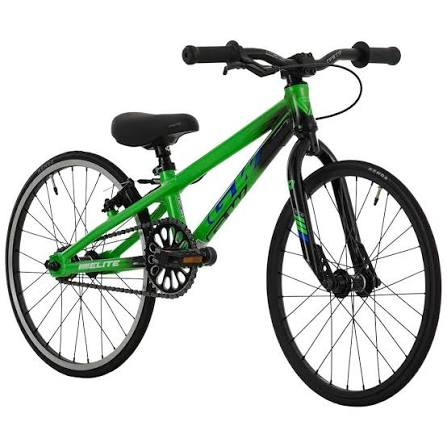

Alquiler de productos
Ofrecemos diferentes opciones de alquiler para que encuentres lo que necesitas de manera fácil y rápida.
Reservar bicicleta ahora Ver tarifas de alquiler de bicicletasBienvenido a Rueda Libre.
En Rueda Libre nos especializamos en ofrecer soluciones de alquiler prácticas y accesibles, brindando a nuestros clientes una experiencia cómoda, confiable y sencilla. Nuestro objetivo es facilitar el acceso a lo que necesitas, con un servicio pensado para adaptarse a tus necesidades. Visita nuestra ubicación en Medellín.
Tenemos servicios como:
Ofrecemos diferentes opciones de alquiler para que encuentres lo que necesitas de manera fácil y rápida.
Reservar bicicleta ahora Ver tarifas de alquiler de bicicletasTe acompañamos durante el proceso para resolver tus dudas y ayudarte a elegir la mejor opción.
Buscamos que alquilar sea un proceso sencillo, con alternativas que se adapten a tus necesidades y disponibilidad.
Te brindamos información clara sobre nuestros productos, condiciones de alquiler y tarifas para que tomes la mejor decisión.



¿Tienes dudas? Ven y visítanos.